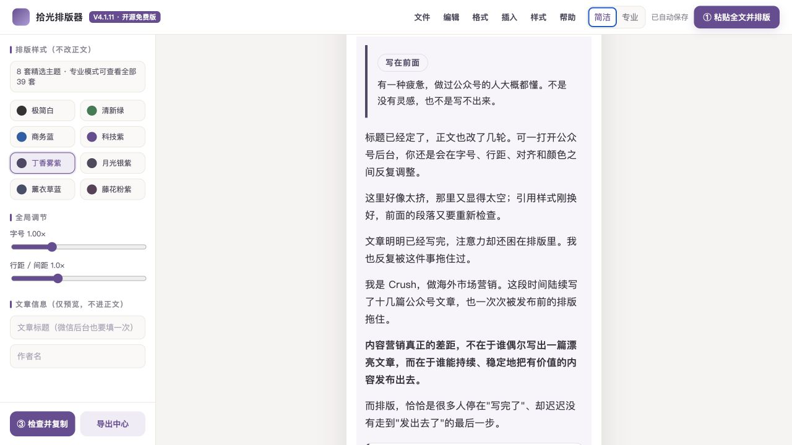

把时间留给内容，
把排版交给工具
无需注册，文章不上传。复制整篇文章，自动组装导语、重点、方法、总结和结尾，再匹配视觉主题并完成微信发布前检查。
开源免费 · 本地优先 · 适合微信公众号电脑端排版

35套视觉主题
16套文章结构
33个内容区块
1个本地 HTML 文件
三步完成一次排版
拾光不会接管你的公众号，也不会替你自动发布。它负责缩短写完文章到进入微信后台之间的重复操作。
1
复制整篇文章
在线打开，或下载 HTML 双击使用。点击“一键排版文章”；无法读取剪贴板时可手动粘贴。
2
生成完整排版
自动识别内容并组装导语卡、重点块、方法卡和总结；已有品牌文末会保留，没有时自动补上通用落尾。
3
复制并验收
运行发布预检，复制清洁富文本，然后到微信后台保存、重开并手机预览。
文章应该属于你，而不是工具平台
拾光没有账号系统和正文上传接口。核心排版可以断网使用；联网时每 24 小时最多读取一次公开版本号，不携带文章内容。
- 本地草稿草稿、快照和偏好保存在当前浏览器中。
- 项目备份重要文章可以导出 JSON，自己保存和迁移。
- 不碰登录不读取微信公众号账号、密码、Cookie 或验证码。
- 主动清理本机数据面板可以查看并清除拾光保存的数据。
微信兼容是一条验收流程，不是一句保证
复制 → 微信粘贴 → 保存草稿 → 重新打开 → 手机预览
- 编辑器预览与微信发布输出分别渲染
- 非数据组件不使用表格模拟布局
- 图片、链接和真实表格都会显式提示
- 标题、摘要、封面和正文图片仍在微信后台处理
- 微信规则变化后，以真实草稿重开效果为准
免费使用，也欢迎一起改进
开源免费版采用 MPL-2.0 许可，由 Crush 持续维护。无需关注即可完整使用；想收到兼容更新、主题上新和后续免费小工具，可在公众号「Crush带你玩转海外市场营销」回复「GitHub拾光」。